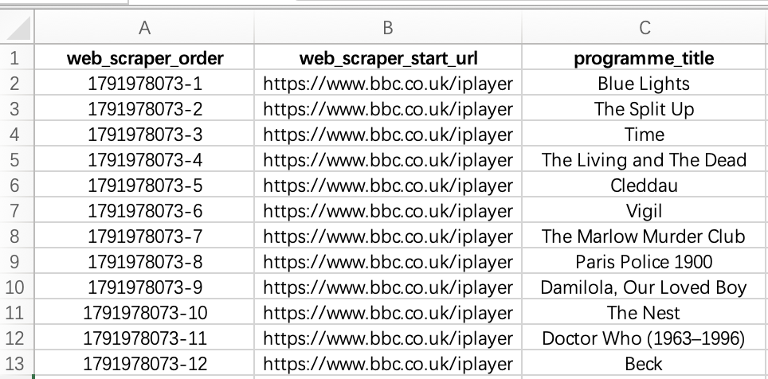
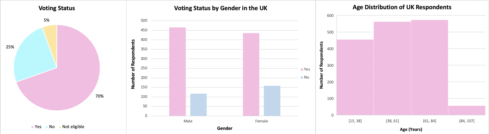
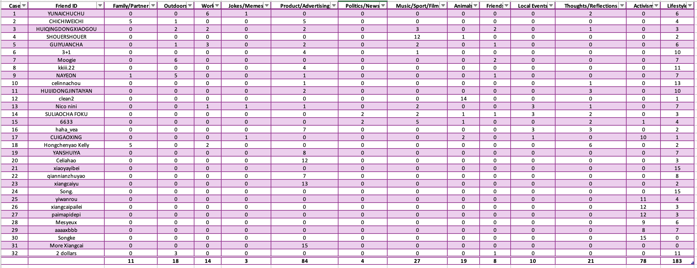
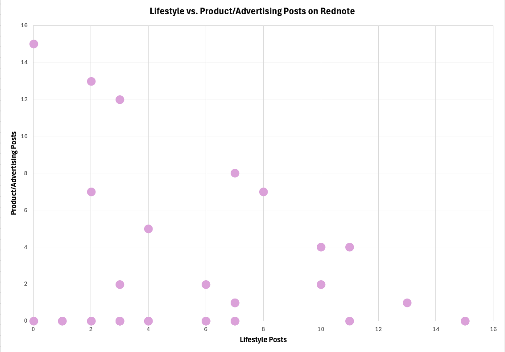

MUSIC
K-pop, concerts,
variety shows, playlists.
Just a girl with too many interests and not enough time.
K-pop, concerts,
variety shows, playlists.
Capturing moments,
editing, visual storytelling.
Everyday style,
brand culture, aesthetics.
New cities,
new perspectives.
For this week's workshop, I used the Web Scraper Chrome extension to collect data from BBC iPlayer.
I extracted the titles of 12 drama programmes and exported them into a spreadsheet.

BBC iPlayer Drama Dataset — 12 programmes
In this workshop, I used Excel to visualise data from the European Social Survey (ESS). I created different charts to explore voting behaviour and age distribution among UK respondents.

ESS Data Visualisation — Workshop Results
In this workshop, I collected and classified 480 posts from 32 Rednote accounts using Sumpter's 13 content categories. I then created a scatter plot to compare different types of social media content.

Rednote Data Collection — Sumpter's Matrix

Lifestyle vs. Product/Advertising — Scatter Plot
Over the past two weeks, I have learned more about digital media, including platforms, networks and algorithms. I also started creating my own website using HTML and CSS, which was a fun experience. Through this process, I realised that digital media is not just about the content we see, but also about the technologies and design choices behind it.
This week, I learned how to use the Web Scraper Chrome extension to collect data from BBC iPlayer. After some trial and error, I successfully extracted 12 drama titles and exported them into a spreadsheet. This experience helped me better understand web scraping and improve my digital skills.
This week, we worked on a group project about AI use among international students in UK universities. We explored different data sources and discussed challenges in data collection. This helped me better understand the importance of data quality and its limitations.
This week, I learned how to use Excel to visualise survey data. I created different charts to explore voting behaviour and age distribution in the UK. This helped me understand how data visualisation can make information easier to interpret and compare.
This week, I collected and classified 480 posts from 32 Rednote accounts using Sumpter's categories. I also created a scatter plot to explore patterns in social media content. This experience made me realise that categorising posts can be subjective and may not fully reflect users' online identities.